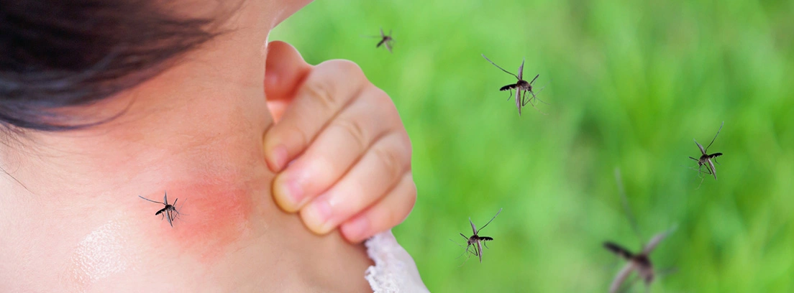

PREVENCIÓN DEL DENGUE
"HOMBRE PREVENIDO VALE POR DOS"
Sitio web informativo
DENGUE: HISTORIA NATURAL DE LA ENFERMEDAD

Descripción
El dengue es una
enfermedad
infecciosa sistémica y dinámica. La infección puede cursar de forma asintomática
o manifestarse con un espectro clínico amplio, que incluye manifestaciones graves y no graves. Después
del
período de incubación (de 4 a 10 días), la enfermedad comienza abruptamente y pasa por tres fases:
febril,
crítica y de recuperación.
Para una enfermedad que es compleja en sus manifestaciones, el tratamiento es relativamente simple,
barato y
muy eficaz para salvar vidas, siempre y cuando se intervenga de manera correcta y oportuna. La clave
está en
detectarla temprano y tener una comprensión de los problemas clínicos que pueden presentarse en las
diferentes fases, para así abordar los casos de manera racional y dar una buena respuesta clínica.
Las actividades - las decisiones de gestión, clasificación de los pacientes (triaje) y tratamiento en
los
servicios primarios y secundarios de atención, donde los pacientes son vistos y evaluados inicialmente,
son
determinantes fundamentales en el resultado clínico del dengue.
Una buena atención primaria no solo reduce el número de hospitalizaciones innecesarias, sino que también
salva la vida de los pacientes con dengue. La notificación temprana de los casos de dengue atendidos en
los
niveles primario y secundario es indispensable para detectar los brotes y dar inicio a una respuesta
oportuna. Para ello, es importante realizar un diagnóstico diferencial correcto.
El dengue se transmite a través de la picadura de un mosquito infectado. Es una enfermedad que afecta
personas de todas las edades, con síntomas que varían entre una fiebre leve a una fiebre incapacitante,
acompañado de dolor intenso de cabeza, dolor detrás de los ojos, dolor en músculos y articulaciones, y
eritema.
La enfermedad puede progresar a formas graves, caracterizada principalmente por
choque,
dificultad
respiratoria y/o daño grave de órganos. El dengue tiene un comportamiento estacionario, es decir, en el
hemisferio Sur la mayoría de los casos ocurren durante la primera mitad del año, en cambio, en el
hemisferio
Norte, los casos ocurren mayormente en la segunda mitad. Este patrón de comportamiento corresponde a los
meses más cálidos y lluviosos.
En las Américas, el vector principal responsable de la trasmisión del dengue es el mosquito Aedes
aegypti.

Fase febril
Generalmente, los pacientes desarrollan fiebre alta y repentina, que puede ser bifásica. Habitualmente,
la fase febril aguda dura de 2 a 7 días y suele acompañarse de enrojecimiento facial, eritema, dolor
corporal generalizado, mialgia, artralgia, cefalea y dolor retro orbitario. Algunos pacientes pueden
presentar odinofagia e hiperemia en faringe y conjuntivas.
Los trastornos gastrointestinales (anorexia, náuseas, vómito y evacuaciones líquidas) son comunes. En la
fase febril temprana puede ser difícil distinguir clínicamente el dengue de otras enfermedades febriles
agudas. Una prueba de torniquete (PT) positiva en esa fase indica un aumento de la probabilidad de que
los pacientes tengan dengue, aun cuando hasta 21% de los casos PT positiva luego no tengan dengue
confirmado.
Además, al comienzo de la etapa febril, esas características clínicas son indistinguibles entre los
casos de dengue y los que más tarde evolucionan a dengue grave; la PT por sí misma no es útil para
diferenciarlos.
Por lo tanto, la vigilancia de los signos de alarma y de otros parámetros clínicos (Anexo G,H e I) es
crucial para el reconocimiento de la progresión a la fase crítica.
A los pocos días del inicio de la enfermedad pueden presentarse manifestaciones hemorrágicas menores,
como petequias y equimosis en la piel. Asimismo, puede haber un aumento del tamaño del hígado, que puede
ser doloroso a la palpación.
La primera anomalía del hemograma es una disminución progresiva del recuento total de glóbulos blancos,
que debe poner al médico sobre alerta, dada la alta probabilidad de infección por dengue.
La bradicardia relativa es común en esta fase, ya que la fiebre no eleva sustancialmente la frecuencia
cardíaca.

Fase crítica
Cuando en algunos
pacientes en los primeros 3 a 7 días de la enfermedad la temperatura desciende y se mantiene a 37,5 ºC o
menos, por lo general, puede haber un aumento de la permeabilidad capilar; paralelamente, incrementan
los niveles de hematocrito.
Esto marca el comienzo de la fase crítica, o sea, el de las
manifestaciones
clínicas debidas a la extravasación de plasma, que por lo general dura de 24 a 48 horas y puede
asociarse con hemorragia de la mucosa nasal (epistaxis) y de las encías (gingivorragia), así como con
sangrado transvaginal en mujeres en edad fértil (metrorragia o hipermenorrea).
La leucopenia con neutropenia y linfocitosis con 15% a 20% de formas atípicas, seguida de una rápida
disminución del recuento de plaquetas, suele preceder la extravasación de plasma. En este punto,
los pacientes sin un gran aumento de la permeabilidad capilar mejoran, mientras que aquellos con mayor
permeabilidad capilar pueden empeorar como resultado de la pérdida de volumen plasmático y llegar a
presentar signos de alarma.
Si no se restaura la volemia de manera oportuna y correcta, “pocas horas después” esos pacientes suelen
presentar signos clínicos de hipoperfusión tisular y choque hipovolémico.
El derrame pleural y la ascitis pueden detectarse clínicamente en función del grado de pérdida de plasma
y del volumen de los líquidos administrados. La radiografía de tórax, la ecografía abdominal o ambas son
herramientas útiles para el diagnóstico temprano de derrames en las cavidades serosas, así como del
engrosamiento de la pared de la vesícula biliar producido por la misma causa.
La progresión de la intensidad de la extravasación de plasma se refleja también en un incremento
progresivo de los niveles del hematocrito; esto repercute en la hemodinámica del paciente que, en una
primera etapa, puede durar horas y expresarse en alteración de la presión arterial por estrechamiento de
la presión arterial diferencial o presión de pulso, acompañada de taquicardia y de otros signos
iniciales de choque, sin caída de la tensión arterial.
Entre los niños es más importante determinar alteraciones del estado mental (irritabilidad o letargo) y
taquipnea, además de taquicardia. En una segunda etapa, el paciente puede cursar con franca
descompensación hemodinámica, caída de la presión sistólica, de la presión arterial media y choque, que
pueden agravarse por la presencia de alteración miocárdica en algunos pacientes.
El choque ocurre cuando se pierde un volumen crítico de plasma por extravasación y, por lo general, es
precedido por signos de alarma. Cuando se produce el choque, la temperatura corporal puede estar por
debajo de lo normal. Si el período de choque es prolongado o recurrente, produce hipoperfusión de
órganos, con hipoxia y deterioro progresivo del paciente. Puede, entonces, presentarse un síndrome de
respuesta inflamatoria sistémica y daño orgánico múltiple, que se acompañan de acidosis metabólica y
coagulopatía de consumo.
Los signos y síntomas señalados anteriormente pueden conducir a hemorragia grave que causa disminución
del hematocrito, leucocitosis y agravamiento del estado de choque. Las hemorragias en esta fase se
presentan principalmente en el aparato digestivo (hematemesis, melena), pero pueden afectar también los
pulmones, el sistema nervioso central o cualquier otro órgano. Cuando la hemorragia es grave, en lugar
de leucopenia puede observase leucocitosis. Con menor frecuencia, la hemorragia profusa también puede
aparecer sin extravasación de plasma evidente o choque.
Algunos pacientes con dengue pueden tener varios órganos afectados desde las fases tempranas de la
infección por acción directa del virus, por apoptosis y por otros mecanismos, que pueden causar
encefalitis, hepatitis, miocarditis y nefritis; anteriormente esos se describían como casos atípicos;
estos casos pueden presentar daño grave de órganos. El riñón, los pulmones y los intestinos también
podrían sufrir daños por la misma causa, así como el páncreas, aunque aún se dispone de poca información
sobre la repercusión en ese último órgano.
Los pacientes que mejoran después de la caída de la fiebre se consideran casos de dengue sin signos de
alarma (DSSA). Al final de la fase febril, algunos pacientes pueden evolucionar a la fase crítica de
fuga de plasma sin que se resuelva la fiebre, que desaparecerá algunas horas después. En estos
pacientes, deben usarse la presencia de signos de alarma y los cambios en el recuento sanguíneo completo
para detectar el inicio de la fase crítica y extravasación del plasma.
Los pacientes que empeoran con la caída de la fiebre y presentan signos de alarma son casos de dengue
con signos de alarma. Esos pacientes casi siempre se recuperan con la rehidratación
intravenosa temprana.
No obstante, algunos casos que no reciben tratamiento oportuno y adecuado, ya sea porque consultan
tardíamente al centro de tratamiento, porque no son diagnosticados tempranamente, porque se le
administran soluciones inadecuadas (en composición, volumen, velocidad) o porque no tienen seguimiento
del personal de salud durante las diferentes etapas de la enfermedad, son los que corrientemente
evolucionan
a las formas graves de la enfermedad.